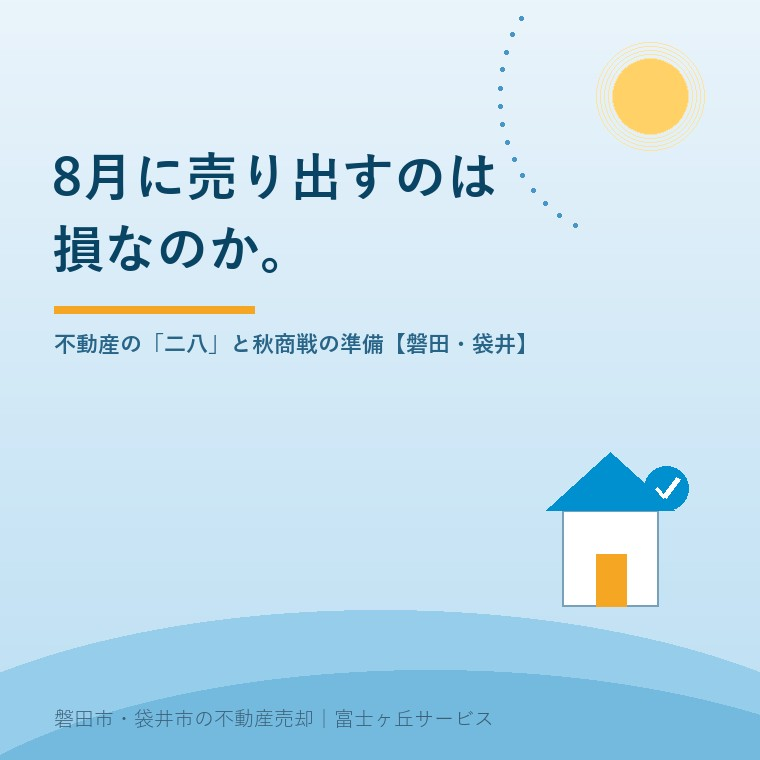

2026年8月5日｜カテゴリ：売却実務・市況

この記事の要点
Q. 実家を売りたいけれど、8月は不動産が動かない時期だと聞きました。秋まで待つべき？
A. 「待つ」のではなく「8月に仕込む」のが正解です。たしかに不動産の繁忙期は2〜3月と9〜11月で、6〜8月は問い合わせが落ちる時期。ただし夏に動く買主は数が少ないぶん本気度が高く、競合物件も少ない。そして何より、9月からの秋商戦に間に合わせるには、境界・名義・残置物といった準備を8月中に終えておく必要があります。磐田市・袋井市では、介護施設の運営から不動産事業を始めた富士ヶ丘サービスのような地域密着の会社に、夏のうちに段取りだけでも相談しておくという選択肢があります。
商売の世界には昔から「二八（にっぱち）」という言葉があります。2月と8月は客足が落ちる、という意味です。不動産も例外ではありません。実際、業界では2〜3月と9〜11月が繁忙期、6〜8月が閑散期というのがほぼ共通認識です。
お盆で会社も休み、猛暑で外出したくない、子どもの夏休みで家族の予定が埋まっている──買う側の事情を並べれば、8月に問い合わせが減るのは当然のことです。
では、8月に売り出すのは損なのでしょうか。売却の段取りの記事でも触れたとおり、答えは「売り出しのタイミングより、準備の完成度のほうが結果を左右する」です。この記事では、夏の市場の実情と、8月という月の正しい使い方を整理します。
不動産の需要は、人が動く時期に連動します。転勤・入学・入社が集中する春に向けて、1〜3月は住まい探しのピーク。総務省の人口移動報告を見ても、転入・転出は3月〜4月に大きく偏ります。そして秋は、春に間に合わなかった層と、年内入居・年内引き渡しを目指す層が動き出す第2のピークです。
| 時期 | 市場の様子 | 売主の動き方 |
|---|---|---|
| 1〜3月（最繁忙） | 買主が最も多い。ただし売り物件も最多で競合が激しい | 年内〜1月中に売り出せていることが理想 |
| 4〜5月 | 春の山が過ぎ、緩やかに減速 | 春に売れ残った物件の価格見直し期 |
| 6〜8月（閑散） | 問い合わせ・内覧が最も少ない。梅雨・猛暑・お盆 | 準備と仕込みの時期。売り出し中なら価格と見せ方の点検 |
| 9〜11月（秋商戦） | 第2のピーク。年内引き渡しを狙う実需が動く | 9月頭に「完成した状態」で出せているかが勝負 |
| 12月 | 年末で失速。ただし翌年1月に向けた仕込みは進む | 年明けの売り出し準備 |
この表で一番大事なのは、9〜11月の行にある「9月頭に完成した状態で」という部分です。秋商戦は9月に始まるのではなく、8月に準備を終えた人だけが参加できるのが実情です。
閑散期＝売れない時期、と決めつけるのは早計です。8月に問い合わせをくださる方には、はっきりした特徴があります。
| 夏に動く買主のタイプ | なぜ本気なのか |
|---|---|
| お盆の帰省で実家の話が出た人 | 親の施設入居・相続が現実になった。時間の制約がある |
| 年内引き渡しを目指す人 | 住宅ローンの審査・契約・決済の期間から逆算すると、夏〜秋が動くリミット |
| この地域に絞って探し続けている人 | 気に入るエリアが決まっており、出物が出れば季節を問わず動く |
| 建て替え・買い替えの実需層 | 解体・着工のスケジュールが決まっている |
数は少なくても、冷やかしが少ない。しかも競合となる売り物件も減っているため、目に留まる確率はむしろ上がる。これが夏の市場の裏の顔です。「夏は動かないから」と売り出しを止めてしまうと、この少数の本気層をまるごと逃すことになります。
実際、当社が扱う実家の売却でも、8月の問い合わせがそのまま9月契約・11月決済につながった例は珍しくありません。問い合わせの本音の記事でも書いたとおり、問い合わせの「数」と「質」は別物です。
秋商戦を本気で取りに行くなら、8月にやることは決まっています。どれも「思い立ってすぐ」には終わらない項目ばかりです。
逆に言えば、これらが終わっていない状態で9月を迎えると、秋商戦の3か月は「準備している間に終わる」ことになります。年内引き渡しを逃せば、次のチャンスは翌年2〜3月。半年、固定資産税と管理の手間を払い続けるということです。
すでに売り出している方向けに、夏ならではの注意点をまとめます。細かいようですが、内覧で選ばれる家の話と同じで、勝負はここで決まります。
この地域で不動産を仕事にしていて実感するのは、8月の本当の主役は買主ではなく売主側の家族会議だということです。県外に出たきょうだいが帰ってくる、この年に一度のタイミングでしか、実家の話はまとまりません。
「誰が住むのか」「誰も住まないなら、いつ手放すのか」「お金と手間は誰が出すのか」──お盆に方向性が決まった家が、秋に売り出され、年内に決まっていく。これが磐田・袋井の毎年の景色です。当社への相談も、8月中旬から9月にかけて明確に増えます。
そしてこの地域には、もう一つ夏ならではの事情があります。台風です。9月の台風シーズンに空き家が被害を受けると、屋根の修理や火災保険の手続きで売却は数か月止まります。台風前の点検を8月のうちに済ませておくことは、防災であると同時に、売却スケジュールを守るための実務でもあります。
帰省のついでに実家を見に行くなら、固定資産税の通知書と権利証だけ持って寄ってみてください。ふじがおか実家カルテでは、その2枚から名義・接道・農地の有無・想定価格帯まで、宅建士が1冊に整理してお渡しします。家族が集まっている間に共有できる資料があるだけで、話の進み方が変わります。
富士ヶ丘サービスは、介護施設の運営から不動産事業を始めた、磐田市・袋井市の地域密着の会社です。「今すぐ売るかは決めていないが、秋に動くとしたら何を準備すべきか」──そのご相談こそ、8月にいただきたい話です。実家じまい相談室からお気軽にどうぞ。
ふじがおか実家カルテ｜お盆の家族会議に、1冊持っていく
秋に売り出すなら、8月に「今の状態」を確定させる。
固定資産税通知書と登記情報から、名義・境界・接道・農地・残置物の課題と、秋商戦に間に合わせるスケジュールを宅建士が整理してお渡しします。
本記事は2026年8月5日時点の公開情報と、当社の営業経験に基づく実務上の考え方をまとめたものです。市場の動きは物件の条件・時期・地域によって異なります。個別のご相談は当社までどうぞ。

この記事を書いた人：大石浩之（宅地建物取引士）
磐田市・袋井市で「介護×相続×空き家」に特化した不動産売却支援を行う富士ヶ丘サービスの代表取締役・宅地建物取引士。介護施設の運営から不動産事業を始めた経験をもとに、売主とご家族が困らない売却を一件ずつお手伝いしています。プロフィール
磐田市・袋井市の実家じまい・相続空き家相談
固定資産税通知書だけでも相談できます
住所があいまいでも、通知書や写真から名義・道路・農地・残置物の確認順を整理します。カルテ申込またはLINEで状況を送ってください。
富士ヶ丘サービス株式会社／静岡県磐田市見付5789番地1／TEL:0538-31-3308／静岡県知事 (2) 第14083号／代表取締役・宅地建物取引士 大石 浩之